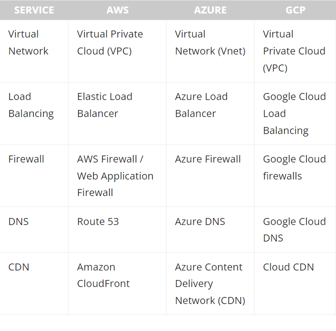

AWS vs Azure vs GCP: Comparing The Big 3 Cloud Platforms
Cloud computing has revolutionized the way organizations work, and advancing us to a new technology era.
Amazon Web Services, Microsoft Azure, and Google Cloud Platform are the top cloud service providers that
dominate the worldwide cloud market.
Nowadays, most enterprises are moving towards the cloud and even multi-cloud environments to harness the
benefits offered by cloud computing, such as:
Decreased CapEx
Reduced infrastructure maintenance
Increased availability
Scalability
Of course, the Big 3 cloud providers possess the experience and expertise to provide a reliable and
feature-rich cloud platform. But, before committing to a specific cloud platform, you must do your due
diligence and compare each platform to fully understand their capabilities and differences.
Amazon Web Services (AWS)
The current market leader of the cloud computing platforms, Amazon Web Services is a subsidiary of
Amazon.com, Inc. AWS is the most mature cloud platform offering a wide range of services to practically
everyone: individual developers, large enterprises, and even governments.
AWS started its life as an internal cloud offering. By 2006, it had evolved into a publicly available cloud
platform with services like Amazon S3 cloud storage and elastic compute cloud (EC2). AWS now offers more
than 200 fully featured services to cater to any demand and serve millions of users.
Prominent AWS customers include:
Expedia
Netflix
Coinbase
Formula 1
Coca Cola
Intuit
Airbnb
Lyft
Coursera
Food and Drug Administration (FDA)
Microsoft Azure
Microsoft Azure is the second-largest cloud platform. Debuting in 2010, Azure has evolved into a cloud
platform with more than 200 products and services. Today, it is among the fastest-growing cloud
platforms.
As Microsoft offers Azure, it provides a wide array of services tailored particularly for
Microsoft-centric enterprises—making the switch to a cloud or a hybrid-cloud environment smooth for many
organizations. In use by more than 95% of Fortune 500 companies, Microsoft Azure has a proven track
record in catering to enterprise users.
Importantly, Azure is not limited to Windows-based services. It also supports open-source languages,
technologies, and platforms, giving anyone the freedom to build and support any application.
Well-known Azure customers include:
DAIMLER AG
McKesson Group
Asos
Center of Disease Control (CDC) – US
National Health Service (NHS) – UK
HSBC
Starbucks
Walgreens
3M
HP
Mitsubishi Electric
Renault
Google Cloud Platform (GCP)
The Google Cloud Platform is the cloud offering by none other than Google. GCP is part of the overarching
Google Cloud.
Available to the general public beginning in 2010, the Google Cloud Platform currently offers over 100
services spanning computing, networking, big data, and more. Today GCP consists of services including Google
Workspace, enterprise Android, and Chrome OS.
Compared to AWS and Azure, GCP is the smallest of the Big 3 cloud providers. Yet it offers a robust set of
cloud services to power and support any kind of application.
Notable GCP customers include:
Toyota
Unilever
Nintendo
Spotify
The Home Depot
Target
Twitter
Paypal
UPS
How to choose a cloud service provider
There are many factors to consider when choosing a CSP. Let’s take a look at the most common angles.
Regions and availability
When choosing a cloud provider, the first thing to consider is its supported regions and availability. These
directly impact the performance of your cloud, due to factors like latency and compliance requirements,
especially when dealing with data.
As of September 2021, here’s where the Big 3 stand:
Amazon Web Service has 25 geographic regions with 81 availability zones. 218+ edge locations, and 12
Regional Edge Caches.
Microsoft Azure runs 60+ regions with a minimum of three availability zones in each region with more
than
116 edge locations (Points of Presence).
Google Cloud Platform has 27 cloud regions with 82 zones and 146 edge locations.
All these platforms provide specialized cloud solutions for the government (Government Cloud). Furthermore,
both AWS and Azure offer specialized services that cater to the Chinese market with data centers located in
China.
Azure has the broadest geographic coverage compared to the others, while all platforms cover most of the
globe. And, showing no signs of slowing, all providers continuously expand their coverage by adding more
regions and zones to meet the ever-increasing computing demand.
Common services
AWS and Azure have the largest service catalogs by offering more than 200+ services. GCP currently offers
around 100+ services. A general breakdown of services is:
AWS has the largest catalog of services.
Azure is a close second with an impressive set of AI, ML, and analytics services.
Google Cloud Platform comes in third place for the number of services offered.
In this section, let’s take a look at the common service offerings of each cloud platform.
Compute Services
Database & Storage Services
Networking

Pricing
The pricing of the cloud platform depends on many factors:
Customer requirements
Usage
The services used
All three platforms offer competitive pricing plans with additional cost management options—reserved
instances, budgets, and resource optimization—available to all users.
The consensus in the IT community is that Microsoft Azure has the lowest on-demand pricing while Amazon
tends to come somewhere around the middle. However, there is a clear advantage when enterprise customers
already using Microsoft services (Windows, active directory, MS SQL, etc.) move to Azure as it is
significantly cheaper than other cloud providers.
AWS vs Azure vs GCP: pros & cons
Summing up the Big 3
Even though AWS is the current market leader in terms of capacity and service, Microsoft and Google are
also rapidly growing to compete with AWS.
Microsoft in particular is hot on the heels of AWS with its strong emphasis on the enterprise. Meanwhile,
Google continues to evolve its presence by providing excellent integrations with open-source projects and
third-party services.
In the end, of course, it all boils down to your specific use case. As the market grows, most enterprises
are looking for multi-cloud strategies to leverage the strengths offered by each cloud provider without
locking themselves to a single provider.